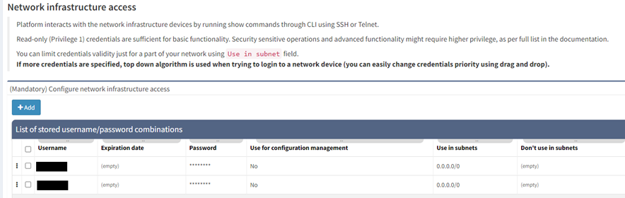

01 - Configure Credentials
Network infrastructure credentials are stored in Settings → Authentication. These credentials use IP Fabric to access the CLI of the network devices. Read-only (privilege level 1) credentials are sufficient for the discovery.

If credentials are provided for configuration changes tracking and saved configuration consistency (i.e. they allow commands such as show run and show start), mark this set of credentials using the checkbox Use for configuration management.

You can limit the validity of the credentials just for a part of your network by Use in subnet field. If more credentials are specified, a top-down algorithm is used when trying to login into a network device or the credentials priority can be changed using drag and drop.